모드는 무엇이고, 어떻게 화면을 바꾸나요
Anthropic이 Claude Code에 Mods를 내놨어요. 영상 설명으로는 10월 1일에 나왔고, 최신 버전으로 업데이트했다면 이미 켜져 있어요. 아이디어는 간단해요. Claude Code에 있었으면 하는 기능을 말로 설명하면, Claude Code가 그 기능을 스스로에게 만들어 붙여요. 진행자 Jay는 직접 써 보고 마음에 든 모드 9개를 소개해요.
모드는 Claude Code가 어떻게 보이고 어떻게 움직이는지를 바꾸는 작은 추가 기능이에요. 터미널의 Claude Code와 데스크톱 앱의 Code 탭에서 쓸 수 있어요. 녹화 시점에는 VS Code 확장에서는 아직 안 보였다고 해요.
스킬, 커넥터와 무엇이 다를까요
이미 스킬과 MCP(Model Context Protocol) 커넥터가 있는데 모드는 뭐가 다를까요. 영상은 세 칸으로 나눠 설명해요. 아래 화면에서 강조된 왼쪽 칸이 스킬이에요. 제목은 'A Skill tells Claude how to do a job'(스킬은 Claude에게 일하는 법을 알려 줘요)이고, 특정 업무를 위한 매뉴얼 같은 거예요. 가운데 MCP 커넥터는 Claude를 다른 앱에 꽂아 주는 역할이에요.
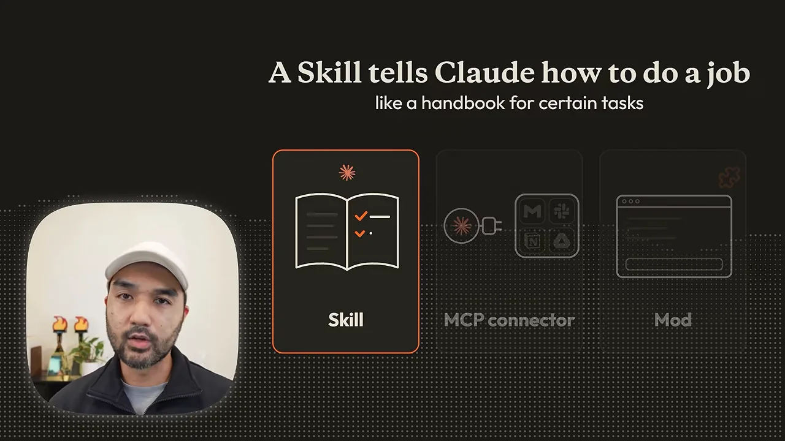
모드는 Claude Code 안에서 돌며 Claude Code를 실제로 바꿔요. 화면에 보이는 것까지 바꿀 수 있어서, 추가 버튼, 사이드 패널, 심지어 Claude가 일하는 동안 할 미니 게임도 가능해요. 아래 화면 입력창 위에 'Replay', 'Run tests', 'Undo edit' 버튼이 붙어 있어요. 원래 Claude Code에 없는 버튼을 모드가 더한 모습이에요.
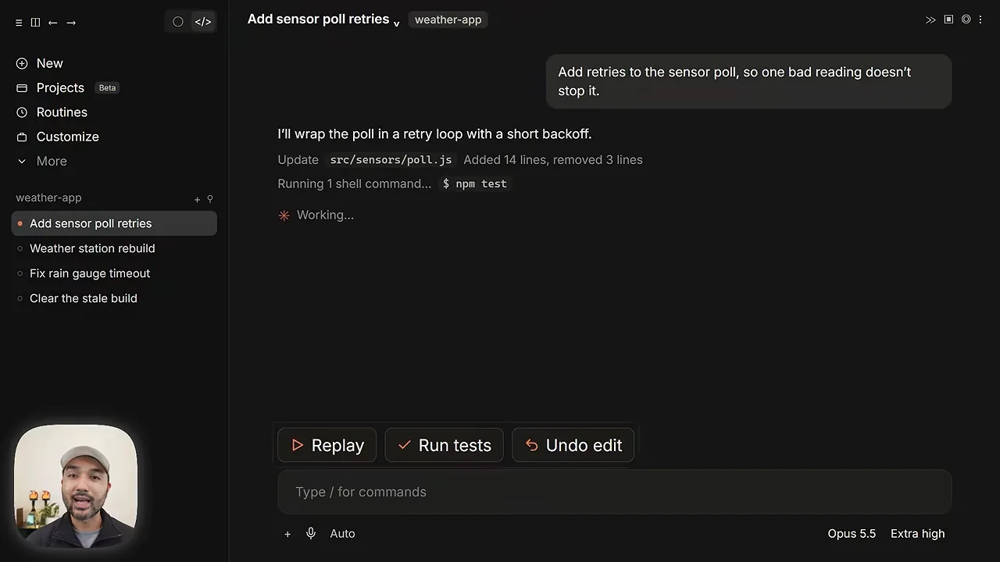
1. Savvy Progress: 서브에이전트가 뭘 하는지, 얼마 드는지
첫 번째 모드는 Savvy Progress예요. Jay가 '쓸모와 재미가 딱 알맞게 섞였다'고 좋아하는 모드예요. 프롬프트 위에 진행 막대를 띄워 Claude가 작업을 얼마나 끝냈는지 보여 줘요. 아래 화면 입력창 위 'Launch kit' 줄에 'Tasks 2/4'와 50%가 표시돼 있고, 오른쪽 '×4'는 돌고 있는 에이전트 수예요. 오른쪽 아래에 'Savvy Progress by Johnny (@JohnnyVizz)'라는 출처가 보여요.
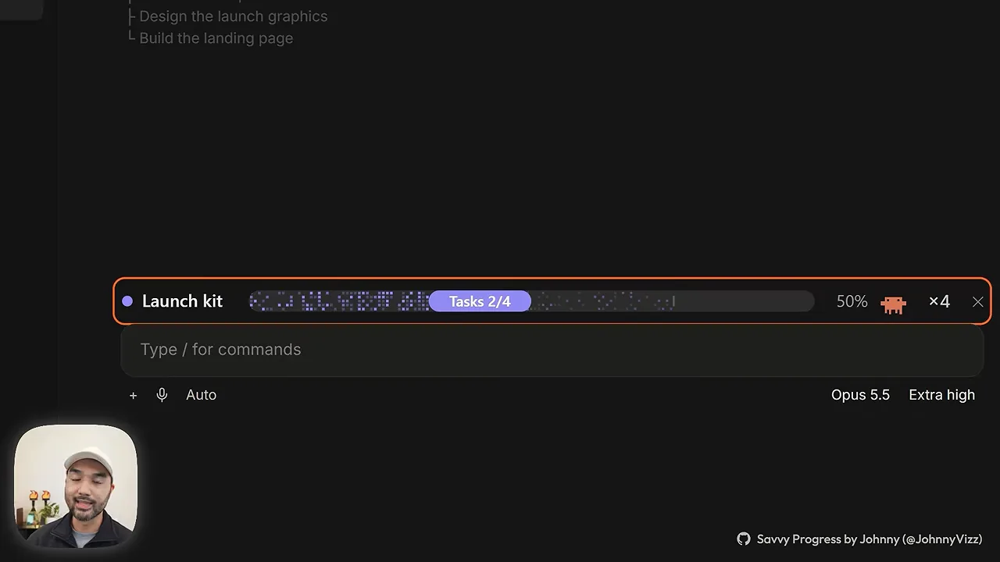
서브에이전트 팀이 일하는 길고 무거운 작업에서는 에이전트마다 패널이 떠요. 서브에이전트는 메인 에이전트가 띄우는 헬퍼 Claude들이고, 큰 일을 한 조각씩 맡아요. 아래 'Agents' 패널 맨 위에 전체 비용(≈$0.28), 토큰(287k), 시간이 있고, 'Build the landing page' 카드에는 모델(Opus 5.5, low), 진행률(4/5), 비용(≈$0.08)이 따로 나와요.
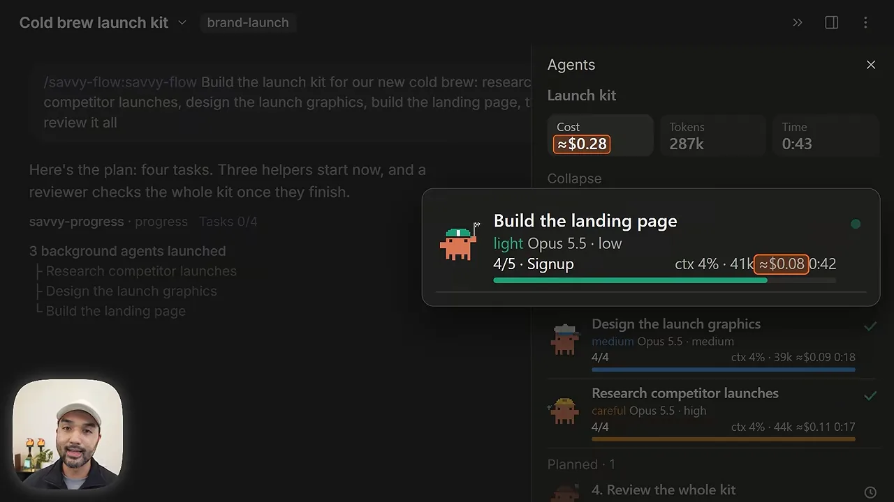
더 재미있는 건 헬퍼 캐릭터를 꾸밀 수 있다는 점이에요. 디자이너처럼 보이게, 개발자처럼 보이게 바꿔 달라고 Claude에게 말하면 돼요. 아래 화면 입력창에 'Customize my agent crabs: one designer, one developer'(내 에이전트 게들을 꾸며 줘: 하나는 디자이너, 하나는 개발자)라고 적혀 있고, 패널의 캐릭터들이 모자와 소품을 달았어요.
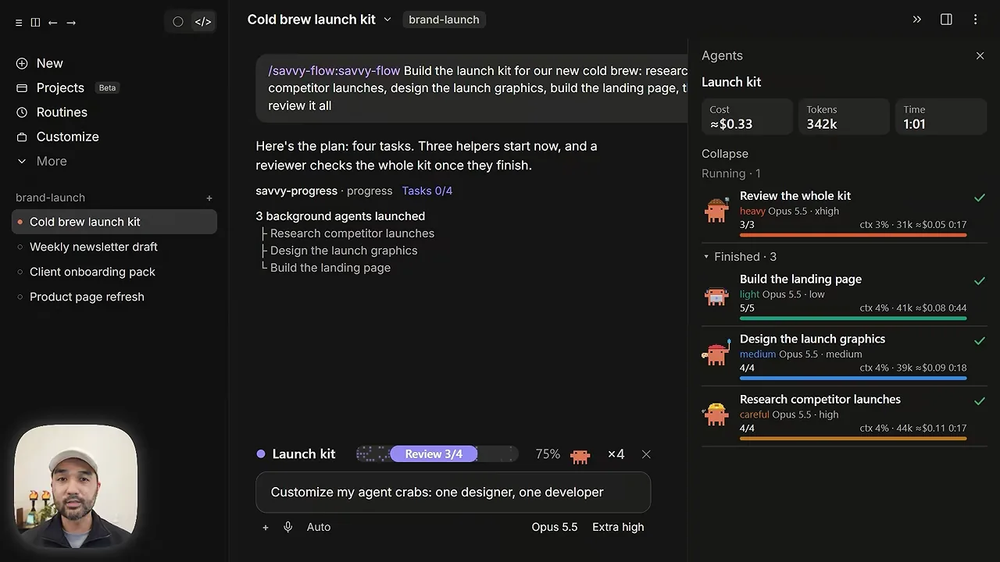
모드는 어떻게 화면을 바꿀까요
Claude가 명령 실행 같은 무언가를 할 때마다 Claude Code는 '이벤트'라는 작은 신호를 보내요. 모드는 그 이벤트를 듣는 작은 코드예요. 이벤트가 오면 모드는 세 가지 중 하나를 해요. 아래 화면처럼 Claude Code에서 'edited a file' 이벤트가 나오면, 모드의 세 문 Watch(지켜보기), Change(바꾸기), Handle(직접 처리하기) 중 하나로 들어가요.
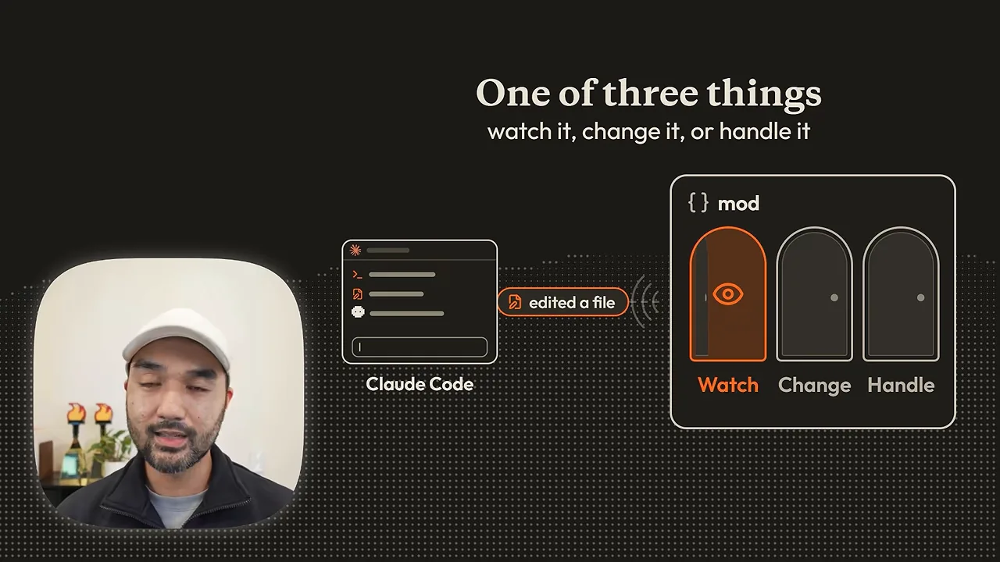
Savvy Progress는 셋을 다 써요. 헬퍼가 시작될 때마다, 그리고 헬퍼가 모델에 일을 시킬 때마다 모델·토큰·대략의 비용을 적어 둬요(지켜보기). 프롬프트 위 영역을 그리는 방식을 바꿔 진행 막대를 넣어요(바꾸기). 에이전트 패널을 열면 커스텀 게 캐릭터까지 포함해 패널 전체를 스스로 그려요(직접 처리하기). 아래 화면이 그 마지막 단계예요. 'Handle'이 켜져 있고 Agents 패널이 통째로 그려져 있어요.
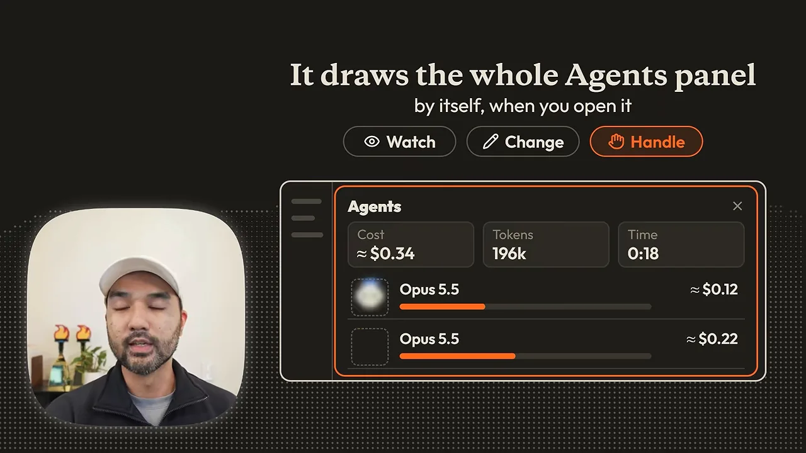
다행히 이걸 몰라도 모드를 만들 수 있어요. Claude Code에 모드 만들기용 내장 스킬이 있어서, 원하는 걸 설명하면 Claude가 만들어 줘요. 이 부분은 마지막 섹션에서 다뤄요.
보이는 것을 바꾸는 모드: Claude Skins, You Should Know, File Tree
2. Claude Skins: 일하는 방식은 그대로, 겉모습만 바꿔요
두 번째는 Claude Skins예요. 아주 단순하지만, 작업 흐름을 거의 안 바꾸고 써 볼 수 있는 첫 모드로 좋아요. Claude Code가 작업을 보여 주는 겉모습을 바꿔요. 도구 호출마다 아이콘이 붙고, 편집 내용을 원하는 색으로 보여 줘요. 아래 'Skins' 패널에 Noir, Tokyo Night, Dracula, Catppuccin 테마 카드가 있고, Catppuccin이 'In use'(사용 중)예요. 맨 아래 'Show 3 more skins'를 누르면 나머지가 나와요.
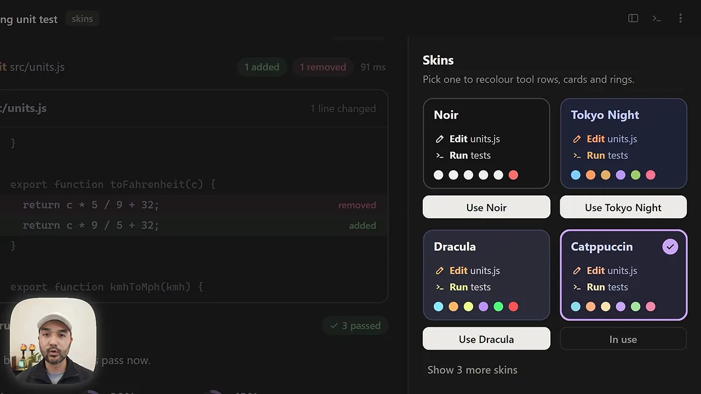
화면 표시만 바꾸기 때문에, 처음 모드를 써 보는 사람에게 꽤 안전한 선택이라고 Jay는 말해요.
3. You Should Know: 긴 답 속 중요한 한 줄을 꺼내 줘요
세 번째는 Anthropic이 직접 만든 모드예요. 옆에서 두 번째 에이전트를 돌려 Claude가 쓴 내용을 읽고, 놓치기 쉬운 중요한 점을 짚어 줘요. 아래 화면은 Anthropic Claude Code 공식 계정의 X 게시물이에요. 'Claude Code에 You should know라는 새 플러그인을 추가한다. Claude의 출력에서 놓치기 쉬운 중요한 정보를 찾아 알려 준다'는 내용과 활성화 명령이 적혀 있어요.
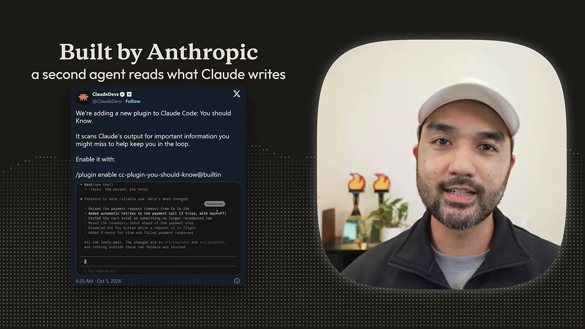
Jay가 Claude Code에게 Kling 같은 모델로 영상을 만들어 달라고 했을 때, 이 모드가 비용을 따로 짚었어요. 아래 카드 제목은 'Each Kling clip costs about $0.45'(Kling 클립 하나에 약 0.45달러)이고, 그 아래 'Kie AI는 5초 클립마다 90크레딧을 받아요'라는 설명이 있어요. Kie AI(Artificial Intelligence)는 Jay가 쓰는 제공 업체예요. 카드 아래에는 'Tell me more', 'I knew this', 'Dismiss' 버튼이 있어요.
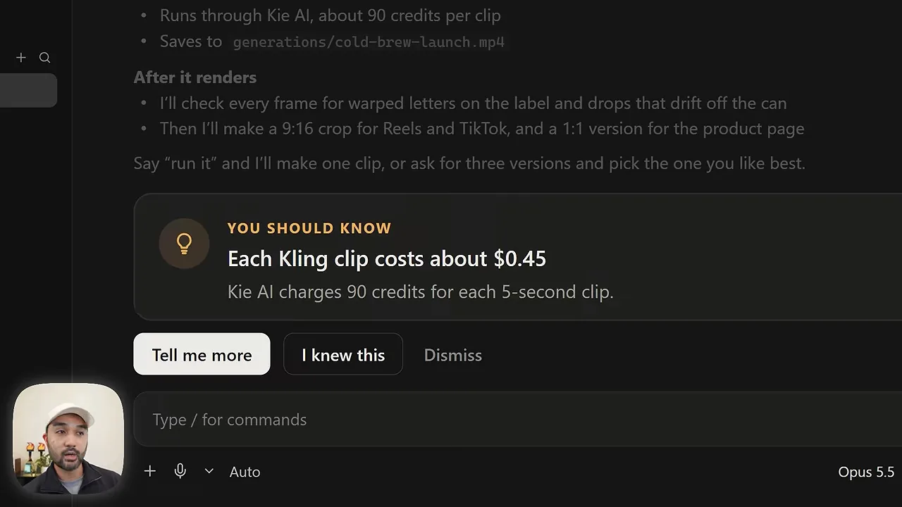
무엇을 볼지도 조정할 수 있어요. 비용, 고객 문제, 자동화가 놓칠 만한 것 등 원하는 쪽을 짚게 바꿀 수 있어요. 주의할 점은 이 모드가 두 번째 에이전트를 돌리니 토큰 사용량이 늘 수 있다는 거예요. 반면 영상에 나오는 모드 대부분은 결정적 코드로 돌아서 LLM(Large Language Model)이 필요 없어요.
4. File Tree: Claude가 지금 만지는 파일이 보여요
네 번째 File Tree는 토큰이 전혀 들지 않는 모드예요. 오른쪽에 파일 패널을 띄워 Claude가 지금 어떤 파일을 다루는지 보여 줘요. 실제 서비스 코드를 다룰 때는 Claude가 무엇을 읽고, 고치고, 바꾸는지 정확히 아는 게 중요해요. 아래 화면 패널 맨 위에 'RIGHT NOW, Claude is reading client.test.js'(지금 Claude가 client.test.js를 읽는 중)라고 나오고, 아래 'CLAUDE TOUCHED' 목록에 그 파일이 'Reading' 표시와 함께 있어요.
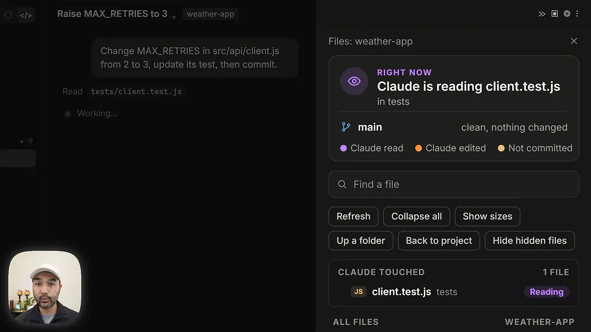
Claude가 건드리는 파일은 트리에서 반짝이고, 변경이 커밋(저장)되면 초록으로 바뀌어요. 아래 화면에서 src/api/client.js와 tests/client.test.js가 초록 'committed' 표시를 달고 있고, 맨 아래에 커밋 번호가 떠 있어요.
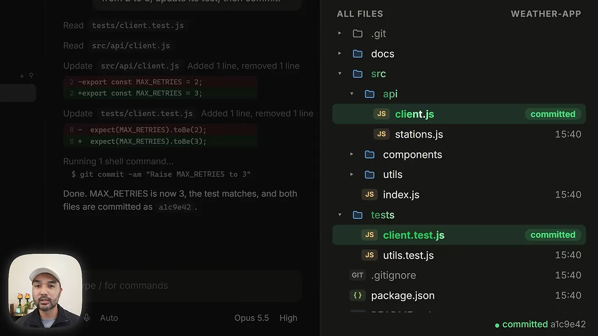
개발자가 아니어도 파일이 많은 일이면 쓸모가 있어요. 예를 들어 여러 서류로 세금 신고를 준비할 때, Claude가 어느 파일을 열었고 어느 파일을 바꿨는지 볼 수 있어요. 아래 tax-return-2026 폴더 예에서 'DONE, Claude edited 1 file'이라는 요약과 함께, 영수증 PDF(Portable Document Format) 세 개는 'Opened', deductions.csv는 'Edited'로 나와요.
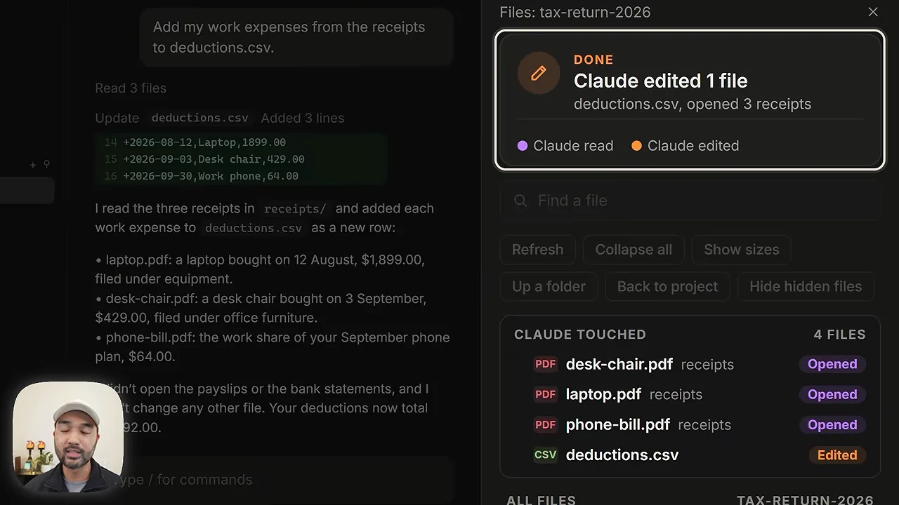
비용과 실수를 막는 모드: Cache Tax, Blast Radius, Reflect
5. Cache Tax: 식은 캐시로 보내기 전에 값을 보여 줘요
다섯 번째는 실제로 돈을 아껴 주는 모드예요. 먼저 프롬프트 캐시를 알아야 해요. 프롬프트 캐시는 Claude가 대화 중 들고 있는 단기 기억이에요. 덕분에 메시지를 보낼 때마다 대화 전체를 다시 읽지 않아 토큰이 덜 타요. 하지만 일정 시간이 지나면 식어요. 아래 그래픽처럼 일반 Claude 구독에서는 대략 한 시간이에요. 식은 뒤 보내는 첫 메시지는 Claude가 대화 전체를 다시 읽게 만들어 사용 한도를 크게 먹어요.
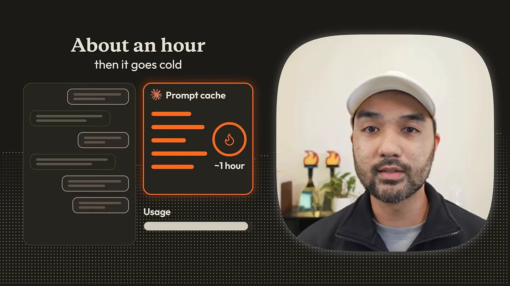
Cache Tax는 대화 전체를 다시 불러올 메시지를 보내기 직전에 멈추고, 토큰과 API(Application Programming Interface) 비용 추정치를 보여 줘요. 보내기 전에 얼마가 드는지 정확히 아는 거예요. 아래 카드는 'Your message is on hold'(메시지를 잠시 붙잡아 뒀어요)라는 제목 아래, 캐시가 6시간 38분 전에 식었다고 알려 줘요. 지금 보내면 0.52달러(51,929토큰 다시 쓰기), 캐시가 따뜻했다면 0.03달러였다고 비교해요. 아래에 'Pay and send', 'Start fresh', 'Show cache status' 버튼이 있어요.
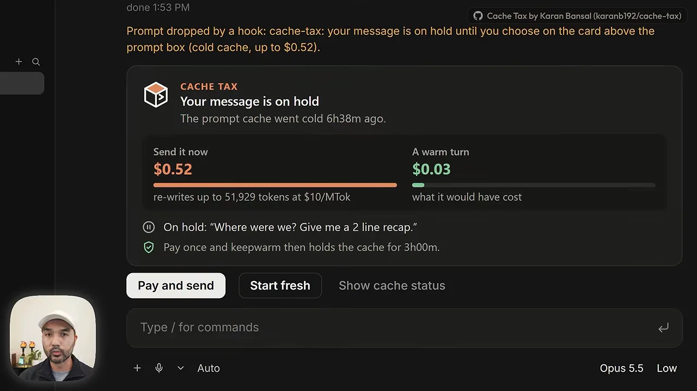
자리를 비울 때는 이 모드의 /keepwarm을 입력하거나 기본으로 켜 둘 수 있어요. 캐시가 식기 직전에 아주 작은 메시지로 세션을 건드려, 돌아왔을 때도 따뜻하게 유지해요. 아래 화면 아래쪽 줄에 'cache-tax · warm · keepwarm 5h10m left · ping in 50m · last ping read 61k $0.03'이 보여요. 그 위 'ping'은 'Reply with the single word: warm'(warm 한 단어로만 답해)이라는 작은 메시지예요.
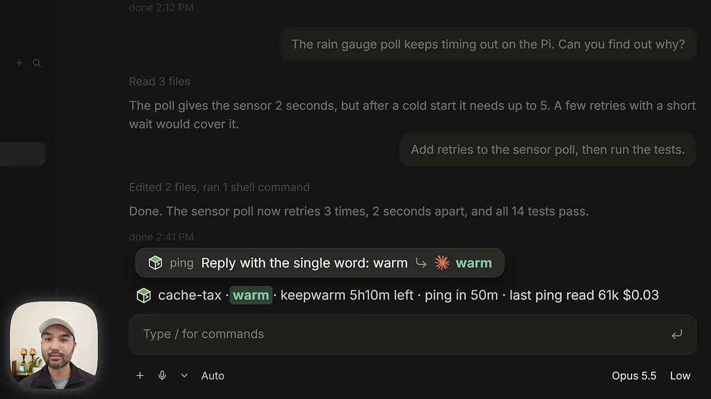
6. Blast Radius: 지우기 전에 무엇이 사라질지 보여 줘요
여섯 번째도 Anthropic이 만든 모드이고, 프로젝트 전체를 구할 수도 있어요. Claude가 폴더 통째 삭제처럼 위험한 걸 실행하려 하면 먼저 멈춰요. 아래 화면 맨 위에 'rm -rf build will delete 9 files · 286 KB'라고 나오고, 빨간 줄로 '이 파일들은 git으로 추적되지 않아 복구할 수 없어요'라고 경고해요. 아래에 지워질 파일 목록과 크기가 이어져요.
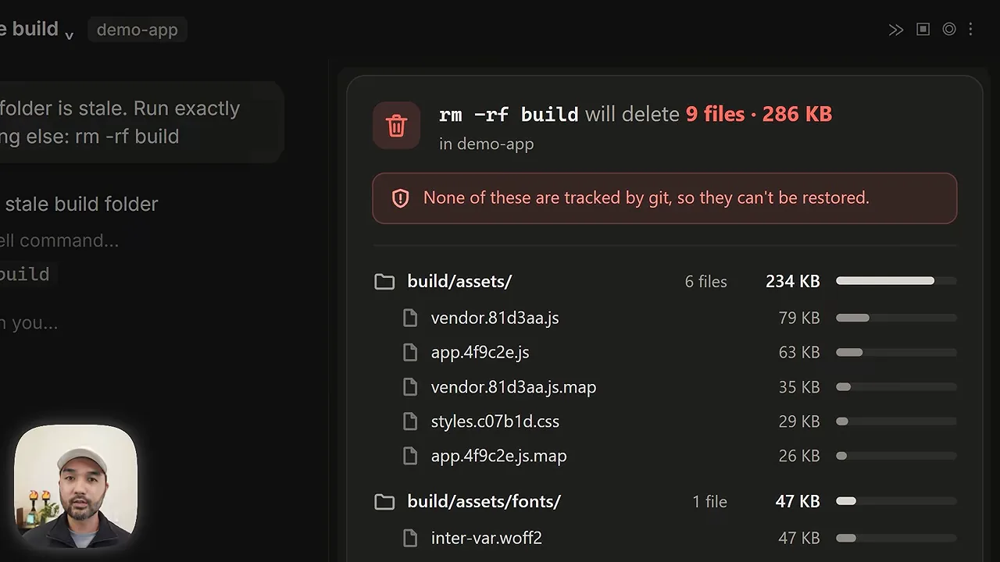
그리고 사람이 직접 눌러야 하는 버튼을 보여 줘요. 아래 화면 맨 아래 'Delete 9 files'와 'Cancel' 버튼, 그리고 'Held by Blast Radius'(Blast Radius가 붙잡아 둠)라는 표시가 있어요.
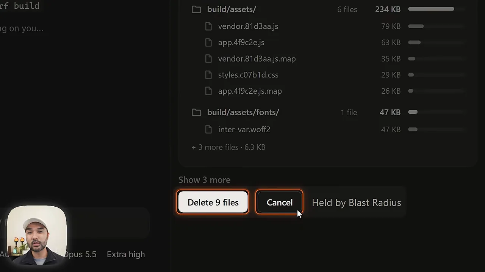
Jay는 에이전트가 파일을 지울 리 없다고 생각할 수 있지만, Opus나 Fable 같은 최신 모델도 누군가의 프로젝트 전체를 지운 사례를 여럿 봤다고 해요. 그런 이야기의 주인공이 되고 싶지 않다면 이 모드나 비슷한 걸 써 보라고 권해요.
7. Reflect: 내 피드백을 규칙으로 남겨요
일곱 번째 Reflect는 사람 피드백 강화학습(RLHF(Reinforcement Learning from Human Feedback))을 아주 작게, 나에게 맞춘 버전 같다고 Jay는 말해요. 'no', '이거 별로야', '이렇게 했으면 좋았을 텐데' 같은 말로 Claude에게 피드백을 주면, 프롬프트 위에 작은 띠가 떠서 그걸 CLAUDE.md나 스킬 파일에 영구 규칙으로 저장할지 물어요. 아래 화면에서 사용자가 'no - in this repo we always use pnpm, not npm'(아니, 이 저장소는 항상 npm 말고 pnpm을 써)이라고 하자, 'SAVE THIS AS A RULE?' 카드에 '이 프로젝트에서는 npm 대신 pnpm으로 패키지를 관리해요'라는 규칙이 제안됐어요.
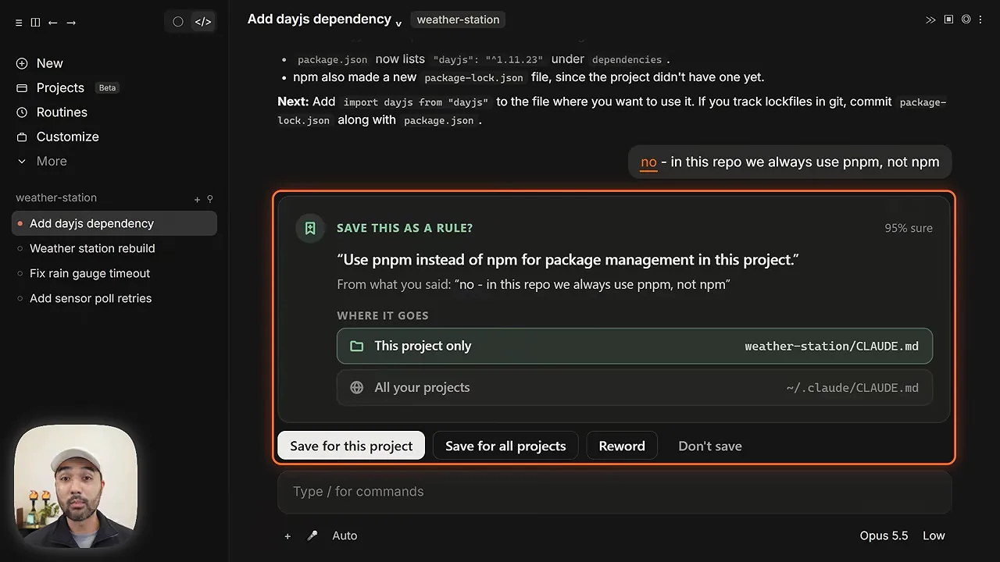
저장을 누르면 Claude가 그 규칙을 써 넣어요. Claude가 무엇을 되새길지 내가 더 세밀하게 고르는 방법이에요.
확인을 쉽게 하는 모드: Terminal Browser, Replay Theater
8. Terminal Browser: 터미널 안에서 웹 페이지를 봐요
여덟 번째는 터미널에서 Claude Code를 쓰는 사람을 위한 모드예요. 채팅 바로 옆에 실제 웹 브라우저를 열어요. Claude가 웹 페이지를 만들어 주면 터미널을 떠나지 않고 보고 검토할 수 있어요. 아래 화면에 /browser, /terminal-browser 명령과 '웹사이트를 나란히 띄워 주는 실제 브라우저'라는 설명이 보여요.
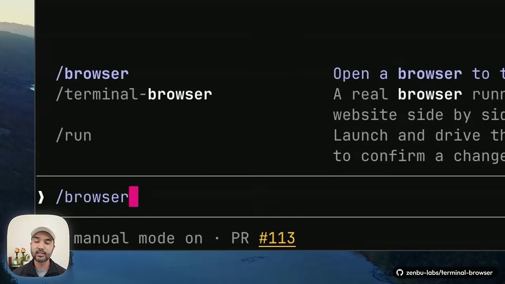
GitHub 풀 리퀘스트도 같은 방식으로 열 수 있어요. 아래 화면은 터미널 안 브라우저에 github.com/zenbu-labs/terminal-browser/pull/113, 'Claude code plugin #113' 풀 리퀘스트가 열린 모습이에요. 코드나 디자인을 바꿀 때마다 Claude와 브라우저를 오가며 확인하던 시간과 머릿속 부담을 아껴 줘요.
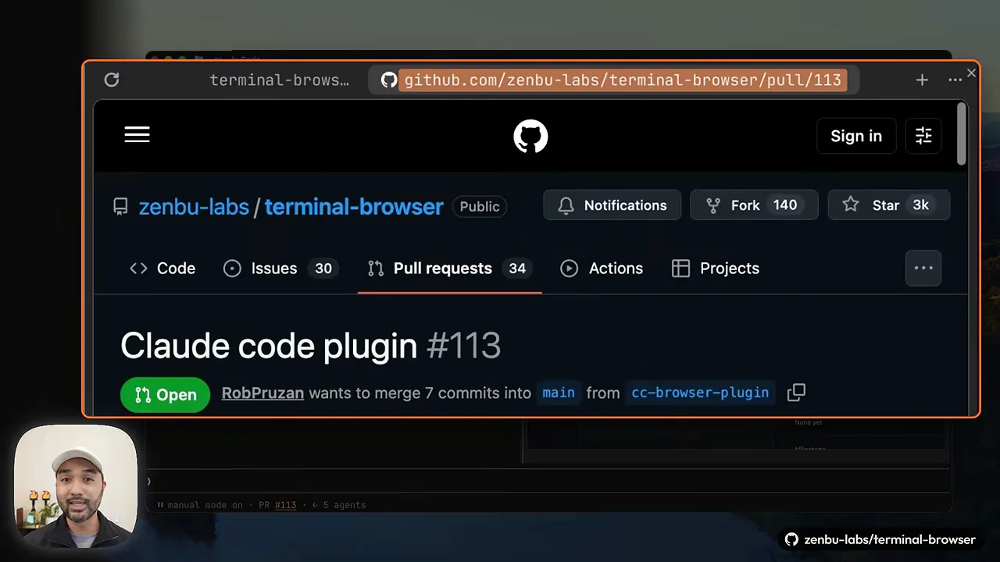
9. Replay Theater: 방금 고친 내용을 한 단계씩 다시 봐요
마지막 아홉 번째도 Anthropic의 예제 모드예요. Claude가 한 턴을 끝내면 재생 버튼이 떠요. 아래 화면 'REPLAY THEATER' 카드에 '4 edits ready to replay'(편집 4개를 다시 볼 수 있어요)라고 나오고, 'greet를 welcome으로 4개 파일에서 바꿨다'는 Claude의 요약이 붙어 있어요. 아래 'Replay edits' 버튼을 누르거나 /replay를 입력하면 돼요.
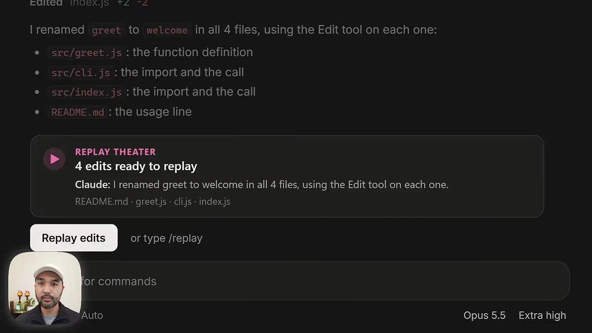
누르면 Claude가 방금 한 파일 편집을 하나씩 넘겨 보여 줘요. 아래 화면 오른쪽 위 '4 edits in 4 files, 6 lines added, 6 removed' 아래 편집 순서 목록이 있고, 지금은 네 번째 편집 index.js를 보는 중이에요. 빨간 줄이 지운 코드, 초록 줄이 더한 코드예요.
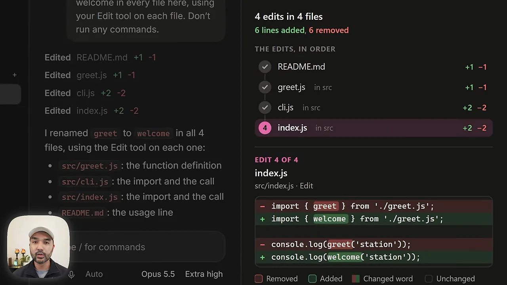
원래는 코드용으로 만들었지만 그 용도에만 묶이지 않아요. 글을 쓸 때도 Claude가 초안에서 정확히 무엇을 바꿨는지 다시 볼 수 있어요. 아래 화면은 '콜드브루 기사를 다듬어 줘, 도입부는 더 힘 있게, 만드는 법은 더 간단하게' 요청 뒤의 재생이에요. draft.md의 편집 3개 중 두 번째에서, 길고 막연한 문장이 '굵게 간 커피 1컵과 찬물 4컵을 섞어 12시간 식혀요'로 바뀐 게 보여요.
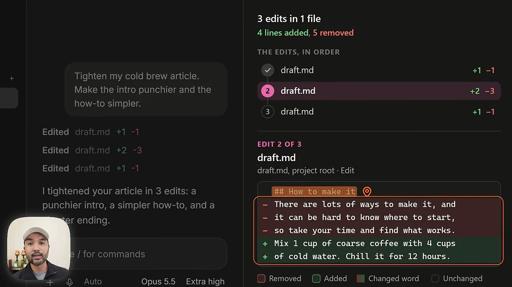
아홉 개를 한눈에 보면
영상이 소개한 모드를 무엇을 바꾸는지, 누가 만들었는지, 모델 사용량이 드는지로 정리하면 이래요. '만든 곳'은 영상의 말과 화면 구석에 뜬 출처 표시를, '모델 사용'은 영상이 말한 것만 적었어요.
| 모드 | 무엇을 해 주나요 | 만든 곳 | 모델 사용 |
|---|---|---|---|
| Savvy Progress | 진행 막대, 서브에이전트별 모델·진행률·비용 패널 | Johnny(@JohnnyVizz) | — |
| Claude Skins | 도구 호출 아이콘·색 테마, 화면만 바꿈 | 오픈소스 저장소 | — |
| You Should Know | 두 번째 에이전트가 놓친 중요한 점을 팝업 | Anthropic | 있어요(토큰 늘어남) |
| File Tree | Claude가 읽고 고친 파일을 패널에 표시 | data-goblin/claude-code-filetree | 없어요 |
| Cache Tax | 식은 캐시로 보내기 전 비용 표시, /keepwarm | Karan Bansal(karanb192/cache-tax) | — |
| Blast Radius | 위험한 삭제 명령을 붙잡고 진행·취소 버튼 | Anthropic | — |
| Reflect | 피드백을 CLAUDE.md·스킬 규칙으로 저장 제안 | — | — |
| Terminal Browser | 터미널 안에 실제 브라우저 | zenbu-labs/terminal-browser | — |
| Replay Theater | 턴이 끝난 뒤 편집을 하나씩 재생 | Anthropic 예제 | — |
'—'는 영상이 따로 말하지 않은 칸이에요. Jay는 You Should Know만 짚어 '두 번째 에이전트를 돌려 토큰이 든다'고 했고, 나머지 대부분은 결정적 코드로 돈다고 했어요.
직접 만들고 남겨 두기
Jay는 모드의 가장 좋은 점이 '내 마음대로 고칠 수 있다'는 거라고 말해요. 방법도 쉬워요.
- Claude Code를 최신으로 올려요 — 모드는 2.1.287 이상이 필요해요. 터미널에서는
claude update, 데스크톱 앱은 최신 버전이 아니면 팝업이 떠요. 버전이 맞으면 모드가 이미 켜져 있어요 - Claude Code를 열고 원하는 수정을 설명해요 — 내장 스킬
plugin-authoring이 모드 구조를 알고 있어서 바로 만들기 시작해요. - 핫 리로딩을 켤지 물으면 켜요 — 세션이 스스로 다시 불러와져서, Claude가 다 만들자마자 지금 세션에 모드가 나타나요.
- 마음에 안 드는 부분은 말로 고쳐요 — 평범한 사람에게 말하듯 바꿀 점을 알려 주면 돼요.
- 마음에 들면 플러그인으로 저장해 설치해 달라고 해요 — Claude가 만든 모드는 기본적으로 임시예요. 설치하면 Claude Code를 열 때마다 나타나요
첫 단계는 터미널 명령 하나예요. 아래 화면처럼 claude update를 입력하면 업데이트를 확인해요.
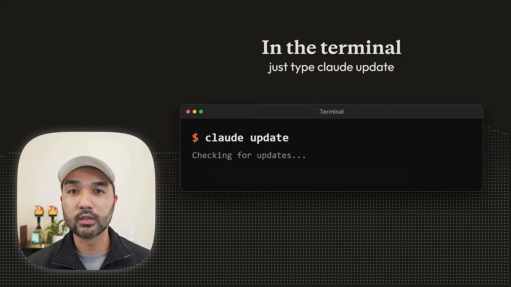
다음은 원하는 모드를 말로 설명하는 단계예요. 아래 화면에서 Jay는 'Claude Code 모드를 만들어 줘: 네가 만드는 모든 파일과 페이지를 내 채팅 입력창 위에 작은 거품으로 보여 줘'라고 요청했어요. 바로 아래 'Loaded skill plugin-authoring'이 떠 있고, 이어 파일 3개를 쓰고 만드는 중이에요.
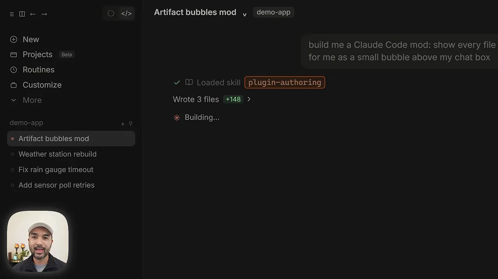
Claude가 만들기 시작하면 이번 세션에 핫 리로딩을 켤지 물어요. 아래 그래픽의 토글이 그 선택이에요. 켜면 세션이 스스로 다시 불러와져서, 완성되자마자 입력창 위에 모드(주황색 원 네 개 줄)가 나타나요.
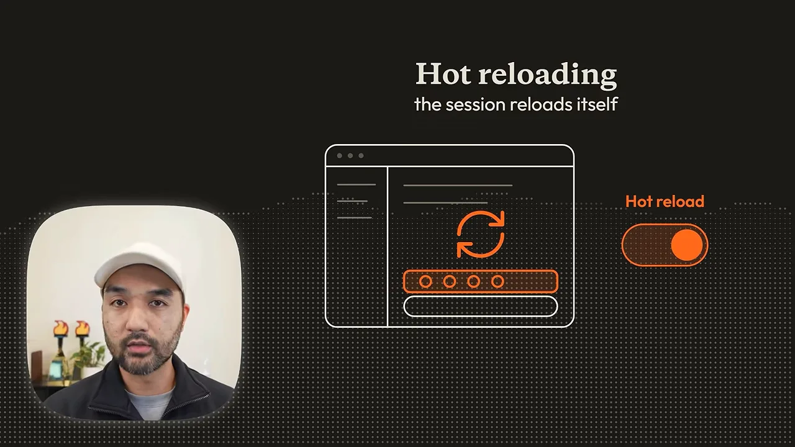
알아 둘 점이 하나 있어요. Claude가 만들어 준 모드는 기본적으로 임시예요. 아래 그래픽에서 '이번 세션'(this session)에는 모드가 있지만, '다음 세션'(next session)에는 점선으로 비어 있어요. 마음에 드는 모드는 플러그인으로 저장해 설치해 달라고 해야 해요.
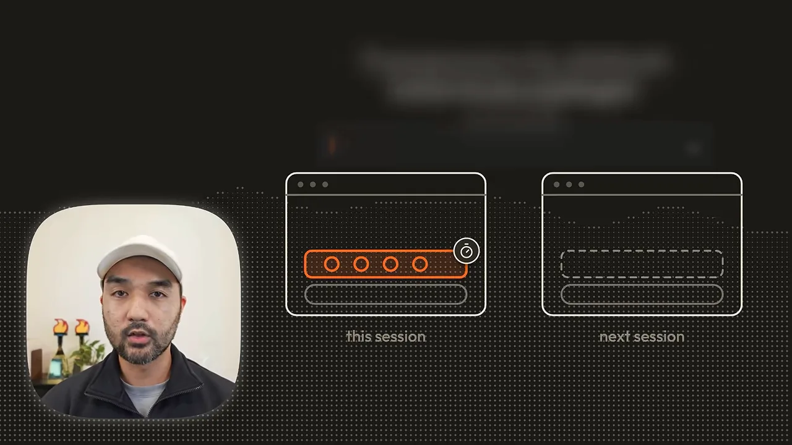
비용과 마무리
모드 자체는 기본적으로 추가 비용이 없어요. 다만 Claude Code가 들어 있는 유료 요금제가 필요하고, 백그라운드에서 모델을 부르는 모드는 다른 작업처럼 Claude 사용량을 써요.
Jay는 Anthropic처럼 영향력 큰 회사가 자기 앱을 고칠 수 있게 연 것이 좋은 신호라고 봐요. OpenAI도 따라오길 바라고, 사람마다 딱 맞게 바꿔 쓰는 '말랑한 소프트웨어'의 시대가 곧 온다고 말하며 마무리해요.